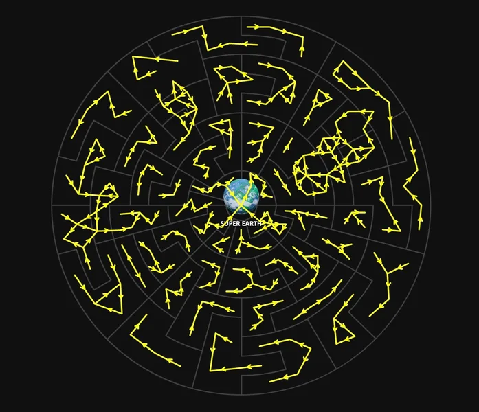

Warp Links
跃迁连接[1], or Supply Lines as they tend to be called by the community, are a dynamic 网络 of pathways between each 冲突-threatened 行星 in the 第二次银河战争. Supply Lines dictate which planets are open for 解放 and which planets are at risk of an 攻击 by the 终结族 和 机器人.
机制
Warp Links critically allow for 解放 and 防御 campaigns to occur via the mounting of 行星 攻击.
An enemy 行星 cannot be liberated unless it is connected to a 超级地球 controlled 行星 via warp link, and enemy 阵营 cannot launch a 防御 campaign on a 超级地球 controlled 行星 without a warp link.
If a 超级地球 controlled 行星 is connected to an enemy controlled 行星 via Warp Link, the 超级地球 行星 will mount a 行星 攻击 on said enemy 行星, triggering a 解放 campaign.
When 超级地球 fully liberates an enemy controlled 行星, new 行星 攻击 are immediately mounted from the newly liberated world to any connected enemy controlled planets.
Moreover, if 超级地球 happens to lose 控制 of a 行星, all 行星 攻击 mounted from said 行星 will cease. Unless another 超级地球 owned world is attacking an enemy 行星 being liberated, the 解放 campaign for said enemy 行星 will stop.
防御 campaigns are triggered when an enemy 阵营 mounts a 行星 攻击 from one of their controlled planets to a 超级地球 controlled 行星 via Warp Link.
Should 超级地球 fail to defend the attacked 行星 before the 防御 campaign's 截止日期, said 行星 will be lost to the attacking 阵营. 任意星球 攻击 mounted from the lost world will cease.
However, a 防御 campaign can end early if the 行星 mounting the 攻击 towards the 超级地球 行星 is liberated before the 防御 campaign's 截止日期. This is 通常 referred to as a Gambit by the community.
历史
- Prior to 补丁 01.000.400, Supply Lines could only be viewed through third party applications.
- This 已更改 following the 补丁, where the Supply Lines would be displayed on the in-game 银河地图.
详情
- Warp Links are dynamic, they can change at any time, 通常 depending on the active 重要指令 or manually.
- Enemy 阵营 will 通常 follow the Supply Line rules when launching 攻击 on 超级地球 worlds, however there are exceptions.
- This includes when Meridia turned into a Supercolony, and when the Valdis 分区 was invaded and captured during the 机器人 second wave.
- On occasion, new Warp Links have been added before the 终结族 和 机器人 launch 攻击 on 超级地球 worlds. However, 超级地球 cannot launch a 解放 campaign via these new Warp Links until a 防御 campaign is won, or if the 行星 in 问题 is lost and re-liberated.
- The method of how Meridia Outbreaks occurred while the Supercolony was active is 未知, as it was observed that the 攻击 did not properly follow the supply line rules.
- If a 行星 bordering a dense Gloom cloud is liberated, then 解放 campaigns will still start for any planets within the dense Gloom cloud if they are connected via a supply line. This is despite said planets being unselectable from the map screen.
- This has been observed twice on Hellmire while the 行星 was enveloped by the dense Gloom cloud. Both times, the active 解放 campaigns had to be manually cancelled.
Images

Old Map of Supply Lines.
参考
- ↑ "To aid your decision-making and coordination, High 指挥 have approved all 绝地潜兵 for 安全 clearance to view Warp Links on the 星系战争地图. Warp Links are the available 导航 routes for your 超级驱逐舰 and appear as lines connecting planets on your map." 官员 绝地潜兵 2 Twitter. Published on June 13th, 2024.